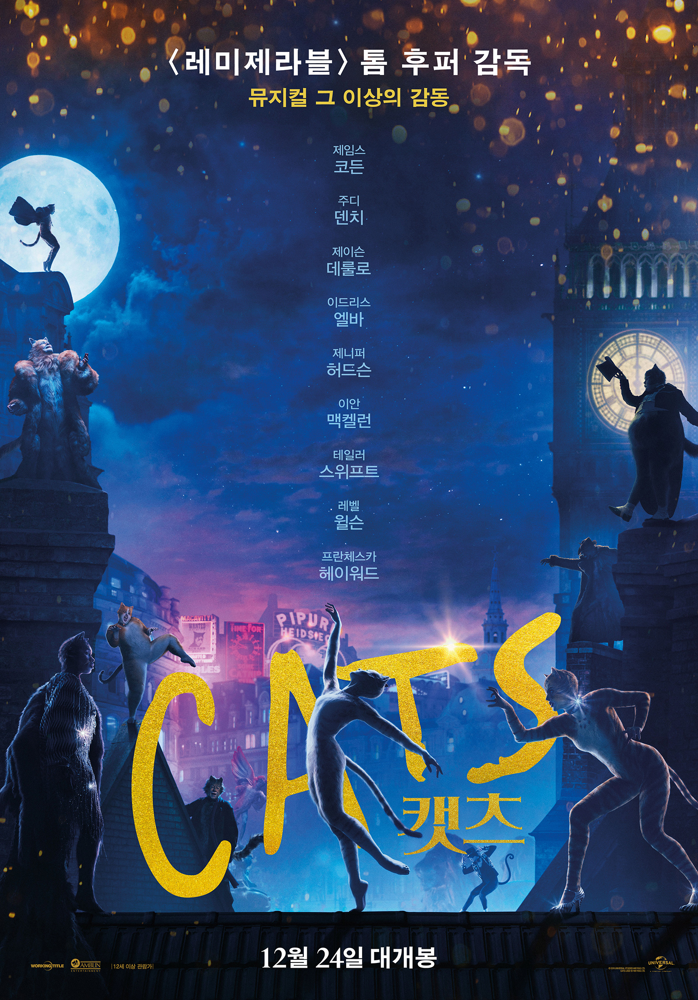

MOVIES
 HOME
┃
HOME
┃
 추천영화
┃
최신영화
추천영화
┃
최신영화
-
「고흐, 영원의 문에서」
“내가 보는 것을 사람들에게도 보여주고 싶어”
가난과 외로움 속에 살던 화가 빈센트 반 고흐는 운명의 친구 폴 고갱을 만난다
그 마저도 자신을 떠나자 깊은 슬픔에 빠지지만 신이 준 선물,
자연의 아름다움을 담기 위해 몰두한다.
불멸의 걸작이 탄생한 프랑스 아를에서부터 오베르 쉬르 우아즈까지...
빈센트 반 고흐의 눈부신 마지막 나날을 담은 기록
-
 「CATS !」
오늘밤, 운명을 바꿀 마법 같은 기회가 찾아온다!
1년에 단 하루, 새로운 삶을 살 수 있는 고양이를 선택하는 운명의 밤.
기적 같은 기회를 잡기 위한 축제가 점점 무르익는 동안 뜻하지 않은 위기가 찾아오는데…
-
「와일드라이프」
“행복한 순간을 영원히 보고 싶어서 사진을 찍는단다. 그걸 평생 간직하는 거지”
1960년 미국 몬태나, 14살 소년 ‘조’(에드 옥슨볼드)가 부모와 이사를 온다.
아빠 ‘제리’(제이크 질렌할)는 산불 진화 작업 일을 하겠다며 위험한 곳으로 떠나고
‘조’는 엄마 ‘자넷’(캐리 멀리건)과 단둘이 남는다.
갑작스러운 변화가 두렵고 낯선 ‘자넷’과 ‘조’.
첫 눈이 내리면 모든 게 제자리로 돌아올까?